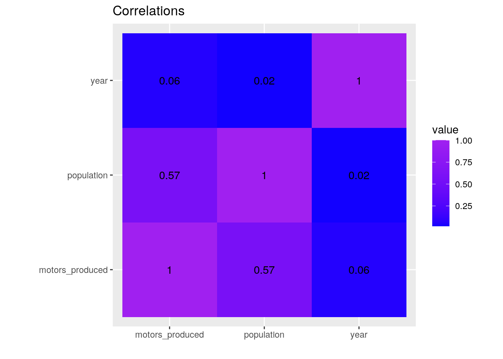
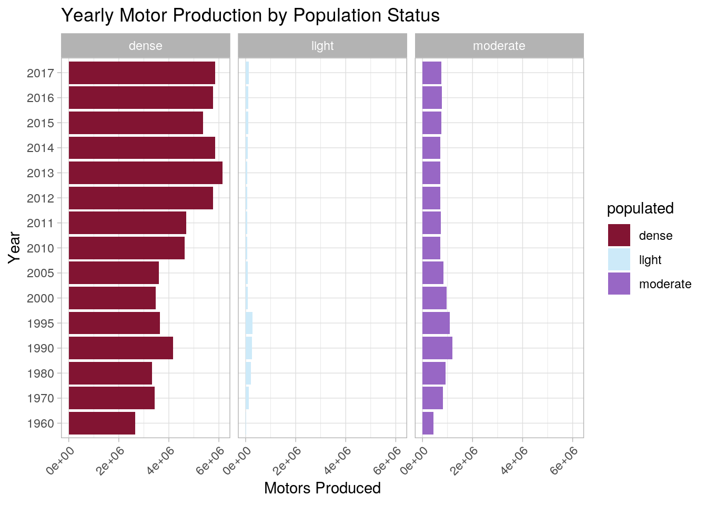
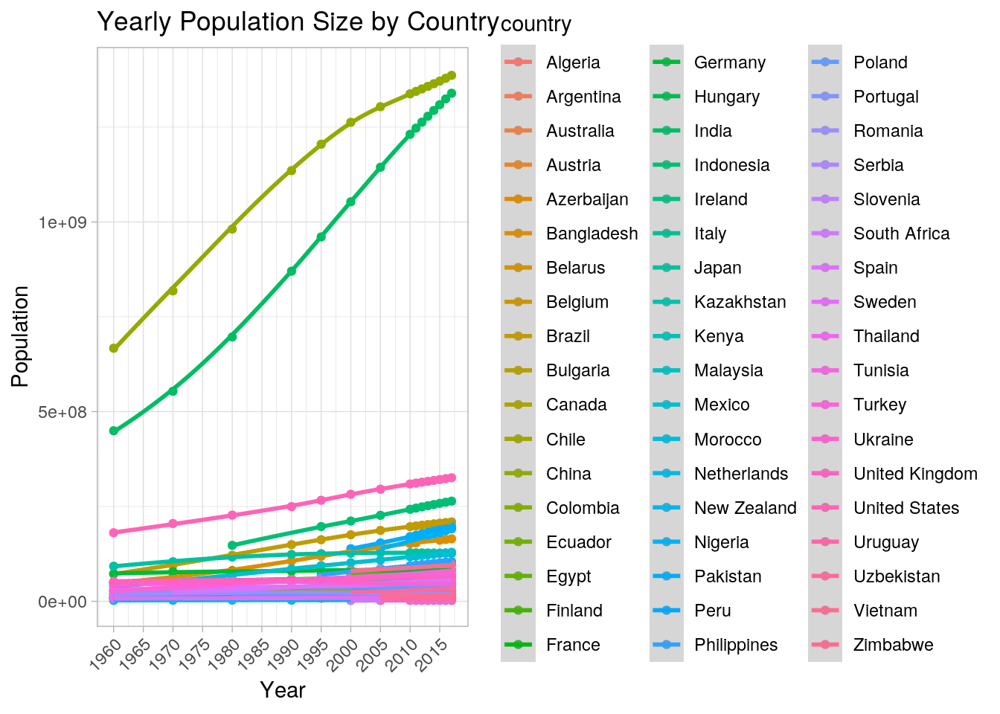
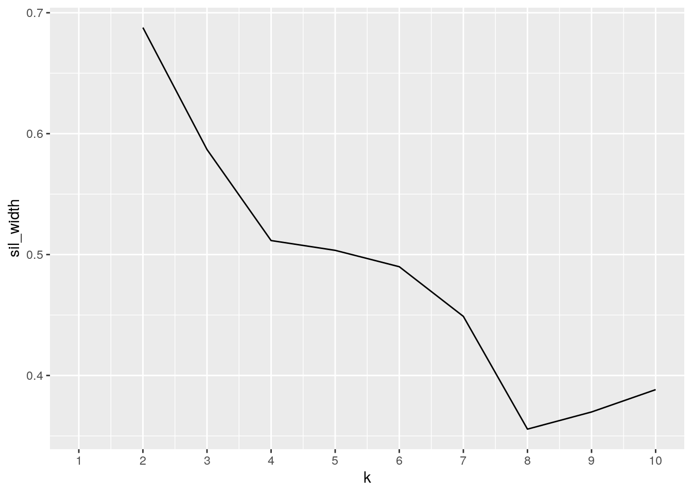
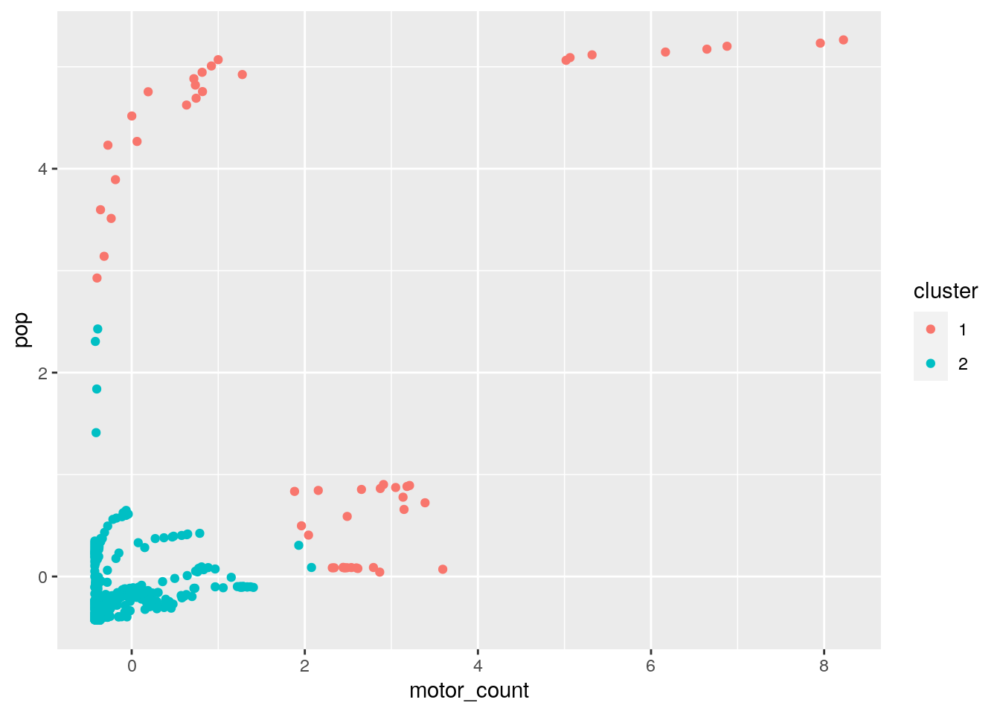
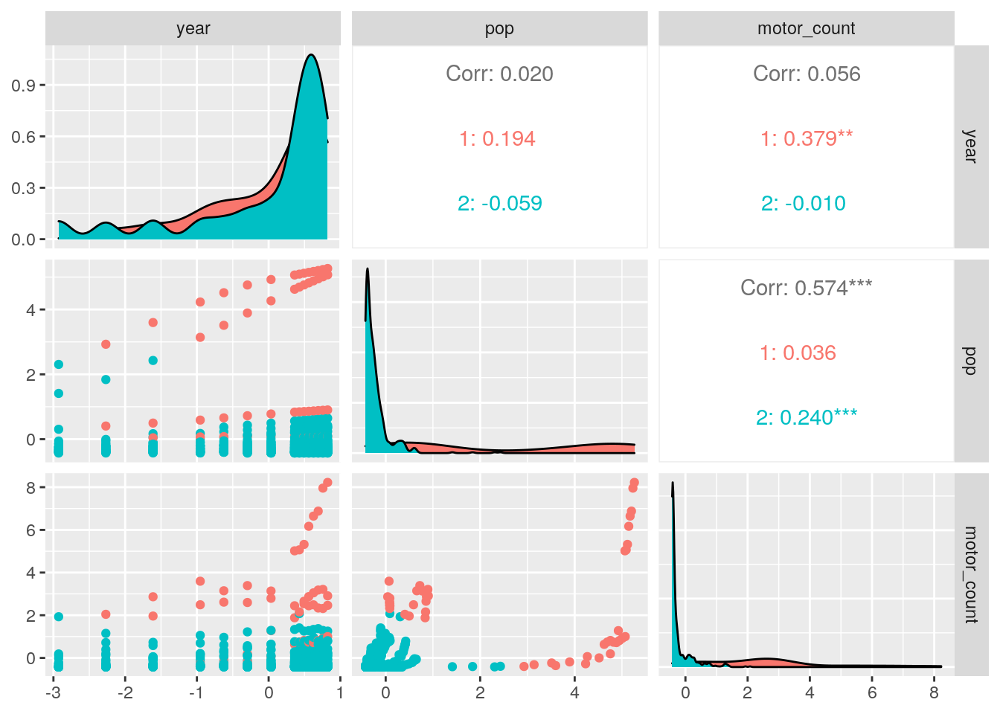

library(tidyverse)
motor <- read_csv("https://vincentarelbundock.github.io/Rdatasets/csv/stevedata/mvprod.csv")
pop <- read_csv("https://vincentarelbundock.github.io/Rdatasets/csv/gt/countrypops.csv")
glimpse(motor)## Rows: 1,206
## Columns: 4
## $ X1 <dbl> 1, 2, 3, 4, 5, 6, 7, 8, 9, 10, 11, 12, 13, 14, 15, 16, 17, 18…
## $ country <chr> "Algeria", "Argentina", "Australia", "Austria", "Azerbaijan",…
## $ year <dbl> 1950, 1950, 1950, 1950, 1950, 1950, 1950, 1950, 1950, 1950, 1…
## $ value <dbl> NA, NA, 58000, NA, NA, 0, 2400, NA, 0, NA, 387726, NA, NA, NA…glimpse(pop)## Rows: 12,470
## Columns: 6
## $ X1 <dbl> 1, 2, 3, 4, 5, 6, 7, 8, 9, 10, 11, 12, 13, 14, 15, 16,…
## $ country_name <chr> "Aruba", "Aruba", "Aruba", "Aruba", "Aruba", "Aruba", …
## $ country_code_2 <chr> "AW", "AW", "AW", "AW", "AW", "AW", "AW", "AW", "AW", …
## $ country_code_3 <chr> "ABW", "ABW", "ABW", "ABW", "ABW", "ABW", "ABW", "ABW"…
## $ year <dbl> 1960, 1961, 1962, 1963, 1964, 1965, 1966, 1967, 1968, …
## $ population <dbl> 54211, 55438, 56225, 56695, 57032, 57360, 57715, 58055…tidyr functions pivot_longer/gather and/or pivot_wider/spread)motor <- motor %>% select(-1) %>% na.omit()
pop <- pop %>% select(-1) %>% na.omit()dplyr join functionjoin <- right_join(motor, pop, by = c(year = "year"))
join2 <- join %>% filter(country == country_name) %>% select(-4) %>%
select(-4) %>% rename(motors_produced = "value")dplyr functions in the service of generating summary tables/statistics (12 pts)
summarize alone and with group_by (if you have more than 10 variables, fine to just focus on 10) (20 pts)
join3 <- join2 %>% unite(year, motors_produced, col = "year.motors",
remove = F) %>% unite(year, population, col = "year.pop",
remove = F) %>% select(-4, -5, -7) %>% pivot_longer(c("year.motors":"year.pop")) %>%
separate(value, into = c("year", "count")) %>% separate(name,
into = c("year1", "variable")) %>% select(-3) %>% pivot_wider(names_from = "variable",
values_from = "count") %>% rename(motor_count = "motors") %>%
mutate_all(type.convert) %>% mutate_if(is.factor, as.character) %>%
mutate(production = ifelse(motor_count > 1e+07, "high", ifelse(motor_count <=
1e+07 & 0 < motor_count, "moderate", "none"))) %>% mutate(populated = ifelse(pop >
9.9e+07, "dense", ifelse(pop <= 9.9e+07 & 1e+07 <= pop, "moderate",
"light")))
join3 %>% summarise_all(n_distinct)## # A tibble: 1 x 7
## country country_code_3 year motor_count pop production populated
## <int> <int> <int> <int> <int> <int> <int>
## 1 54 54 15 570 650 3 3join3 %>% group_by(production) %>% summarise_all(sd) %>% select(-2,
-3, -4, -7) %>% suppressWarnings()## # A tibble: 3 x 3
## production motor_count pop
## <chr> <dbl> <dbl>
## 1 high 6177814. 556137610.
## 2 moderate 1808745. 210701362.
## 3 none 0 58503239.join3 %>% summarise_all(var) %>% suppressWarnings()## # A tibble: 1 x 7
## country country_code_3 year motor_count pop production populated
## <dbl> <dbl> <dbl> <dbl> <dbl> <dbl> <dbl>
## 1 NA NA 231. 1.13e13 5.91e16 NA NAjoin3 %>% summarise(max(pop))## # A tibble: 1 x 1
## `max(pop)`
## <int>
## 1 1386395000join3 %>% group_by(country, populated) %>% summarise(max(motor_count),
.groups = "rowwise")## # A tibble: 63 x 3
## # Rowwise: country, populated
## country populated `max(motor_count)`
## <chr> <chr> <int>
## 1 Algeria moderate 60606
## 2 Argentina moderate 828771
## 3 Australia moderate 475000
## 4 Austria light 253279
## 5 Azerbaijan light 2145
## 6 Bangladesh dense 580
## 7 Bangladesh moderate 0
## 8 Belarus light 40100
## 9 Belgium light 1248290
## 10 Belgium moderate 1033294
## # … with 53 more rowsCreate a correlation heatmap of your numeric variables the way we did in class
Create two effective, polished plots with ggplot
install.packages("ggthemes", repos = "http://cran.us.r-project.org")
library(ggplot2)
join2 %>% select_if(is.numeric) %>% cor %>% as.data.frame %>%
rownames_to_column %>% pivot_longer(-1) %>% ggplot(aes(rowname,
name, fill = value)) + geom_tile() + geom_text(aes(label = round(value,
2))) + xlab("") + ylab("") + coord_fixed() + scale_fill_gradient2(low = "white",
mid = "blue", high = "purple") + ggtitle("Correlations")
join3 %>% mutate(year = as.character(year)) %>% ggplot(aes(year)) +
geom_bar(aes(y = motor_count, fill = populated), stat = "summary",
fun = mean) + ggtitle("Yearly Motor Production by Population Status") +
ylab("Motors Produced") + xlab("Year") + theme_light() +
facet_wrap(~populated) + coord_flip() + scale_fill_manual(values = c("#821432",
"#CDEAF9", "#9867C5")) + theme(axis.text.x = element_text(angle = 45,
hjust = 1))
join3 %>% ggplot(aes(year, pop, color = country)) + geom_point() +
ggtitle("Yearly Population Size by Country") + ylab("Population") +
xlab("Year") + geom_smooth() + theme_light() + scale_x_continuous(n.breaks = 20) +
theme(axis.text.x = element_text(angle = 45, hjust = 1)) * My data all had some correlation to it, with all variables having some sort of positive correlation. Year and population were the least correlated with 0.02, and population and motors produced had the highest correlation with 0.57. I did expect year and population to have a higher correlation as our populations I thought were becoming more populated, so that was the greatest surprise. Another cool find was in my second graph with “Yearly Motor Production by Population Status” I saw that more densly populated countries seem to produce more motors in the more recent years, where lightly/moderately populated countries had a peak in production around 1990. Densly populated countries produced the most motors, while lightly populated produced the least. This was what I expected. The last graph, “Yearly Population Size by Country” was also very interesting. I saw that there is a general increase, with the most populated countries seeing the greatest increase in population over the years. This makes sense, as China and India are the most populated, so the population keeps creating more and more children adding to an already populated socitey.
Either k-means/PAM clustering or PCA (inclusive “or”) should be performed on at least three of your variables (3 is just the minimum: using more/all of them will make this much more interesting!)
library(cluster)
join5 <- join3 %>% select("year", "pop", "motor_count") %>% scale()
sil_width <- vector() #empty vector to hold sil width
for (i in 2:10) {
km <- kmeans(join5, centers = i) #computes k-means solution
sil <- silhouette(km$cluster, dist(join5)) #generates sil widths
sil_width[i] <- mean(sil[, 3]) #creates an average (higher averages are better)
}
ggplot() + geom_line(aes(x = 1:10, y = sil_width)) + scale_x_continuous(name = "k",
breaks = 1:10) #elbow is where to pick (mine is 2), less clusters is better
kmeans <- join5 %>% kmeans(2)
kmeans## K-means clustering with 2 clusters of sizes 52, 598
##
## Cluster means:
## year pop motor_count
## 1 0.034462008 2.5274612 2.4419370
## 2 -0.002996696 -0.2197792 -0.2123424
##
## Clustering vector:
## [1] 2 2 2 2 2 2 2 2 2 2 2 2 2 2 2 2 2 2 2 2 2 2 2 2 2 2 2 2 2 2 2 2 2 2 2 1 2
## [38] 2 2 2 2 2 2 2 2 2 2 2 2 2 2 2 2 1 2 2 2 2 2 2 2 2 2 1 2 2 2 2 2 1 2 2 2 2
## [75] 2 2 2 2 2 2 2 2 2 2 1 2 2 2 2 2 2 2 2 1 2 2 2 1 2 2
## [ reached getOption("max.print") -- omitted 550 entries ]
##
## Within cluster sum of squares by cluster:
## [1] 503.2898 745.5365
## (between_SS / total_SS = 35.9 %)
##
## Available components:
##
## [1] "cluster" "centers" "totss" "withinss" "tot.withinss"
## [6] "betweenss" "size" "iter" "ifault"kmeanscluster <- join5 %>% as.data.frame() %>% mutate(cluster = as.factor(kmeans$cluster))
kmeanscluster %>% ggplot(aes(motor_count, pop, color = cluster)) +
geom_point() #shows my clusters by my data, long lines show probably one countries observations (matches my by year observations)
library(GGally)
ggpairs(kmeanscluster, columns = 1:3, aes(color = cluster)) * I found that my data created two clusters, one of the early years and one of the later years. This was most evident in the ggpairs graphs, where there looked like a perfect divide between the years. As mentioned before, there was an increase in the populations and motors produced as the years progressed. The countries that created the most motors and had the highest populations saw the greatest increase, while the countries that were less populated, and created less motors saw almost no increase.